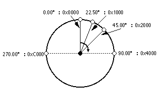
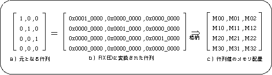
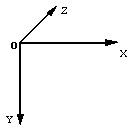
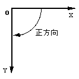

★SGL User's Manual
★PROGRAMMER'S TUTORIAL
★SGL User's Manual
★PROGRAMMER'S TUTORIAL
 |
実際は、マクロ定義という形で浮動小数点数から固定小数点数への変換をサポートしますので、各個人による個別の変換は不要となります（“表1-1: 数値型変換用マクロ例”参照）。 |
例）16.5を表す場合１６.５ → ０ｘ００１０＿８０００ ｜ ｜ ｜ ｜ ｜ 小数部 整数部
図1-4 ANGLEで表現された角度

図1-5 行列のメモリ上の配置

変換型 | マクロ名 | マ ク ロ 内 容 | 使 用 法 |
|---|---|---|---|
| FIXED | toFIXED(p) | ((FIXED)((p)*65536.0)) | 数値のFIXED型への変換 |
| ANGLE | DEGtoANG(d) | ((ANGLE)((d)*65536.0/360.0)) | DEG型角値のANGLE型への変換 |
| FIXED | POStoFIXED(x,y,z) | {toFIXED(x),toFIXED(y),toFIXED(z)} | XYZ座標のFIXED型への変換 |
| 注）マクロは、インクルードファイル”sgl.h”および”sl_def.h”中で定義されています。 | |||
|
本書中のサンプルプログラムでも、断り無く当該マクロを使用することがあります。 |
 |  |
| a)セガサターンの用いる座標系(右手系) | b)Z軸に対する回転の正方向 ・Ｚ方向の正方向を画面奥に据えたとき、Yの正方向は下、Xの正方向は画面右に向かって伸びる ・回転の正方向は軸に対して右向き |
★SGL User's Manual
★PROGRAMMER'S TUTORIAL